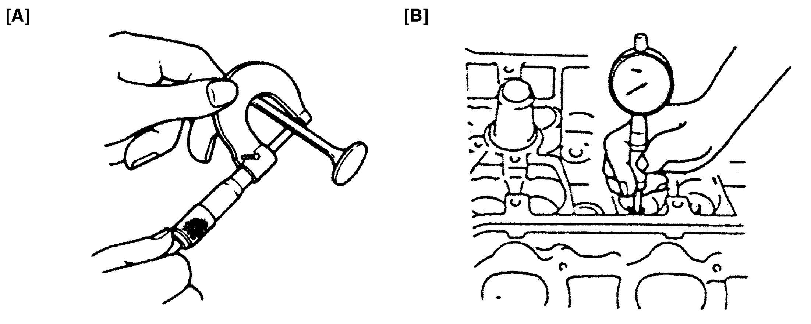
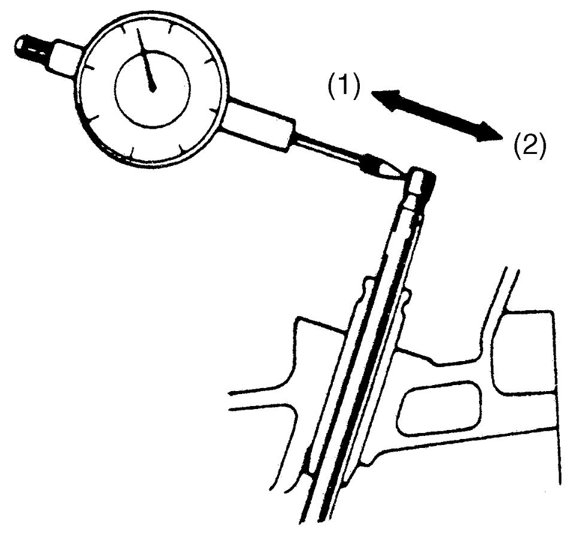
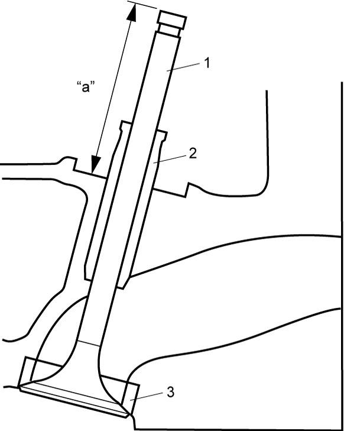
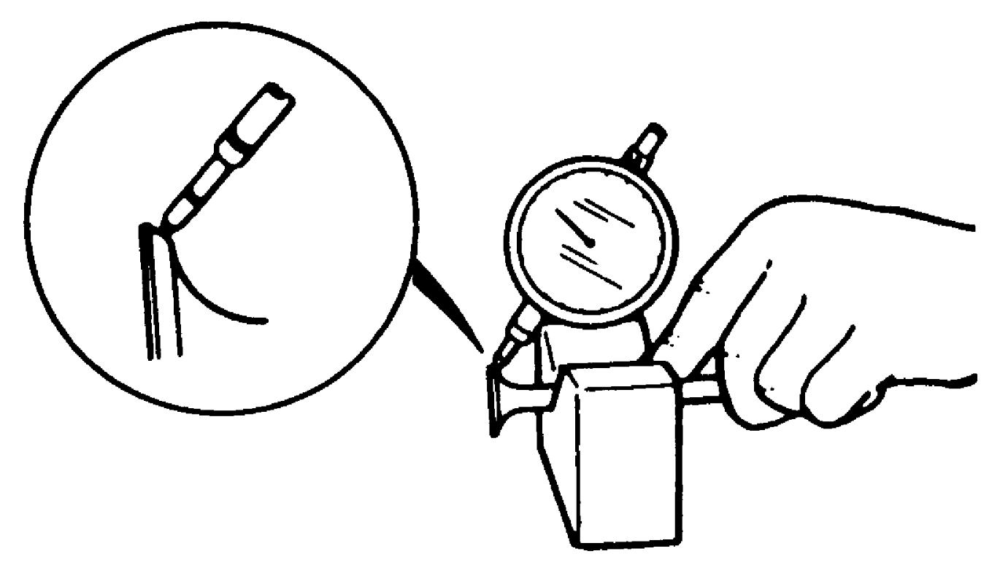
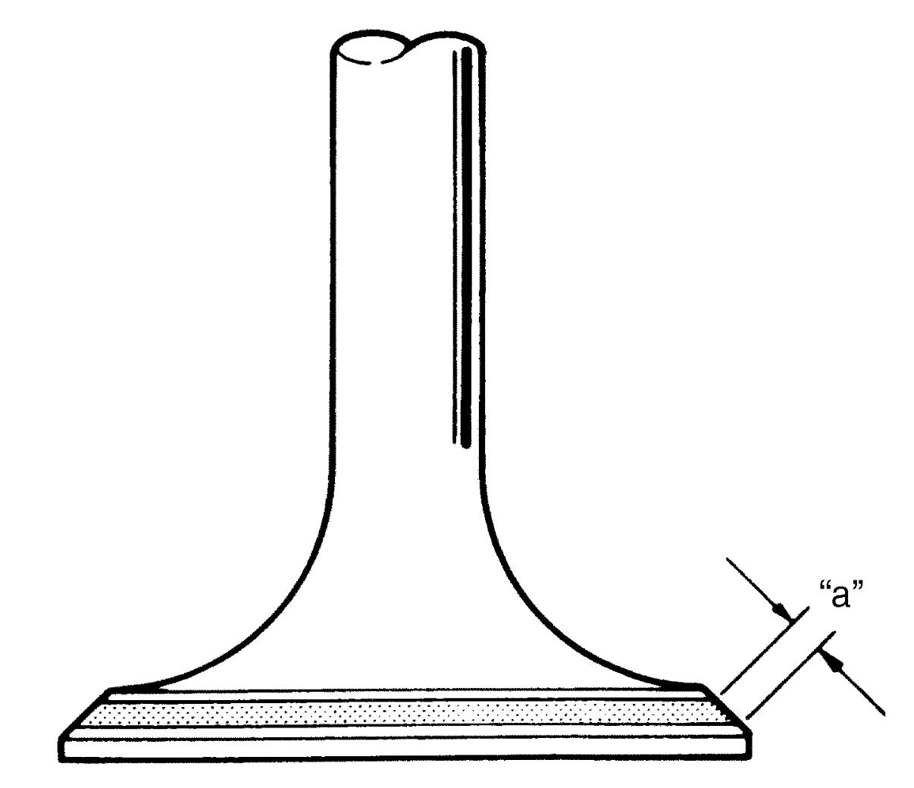
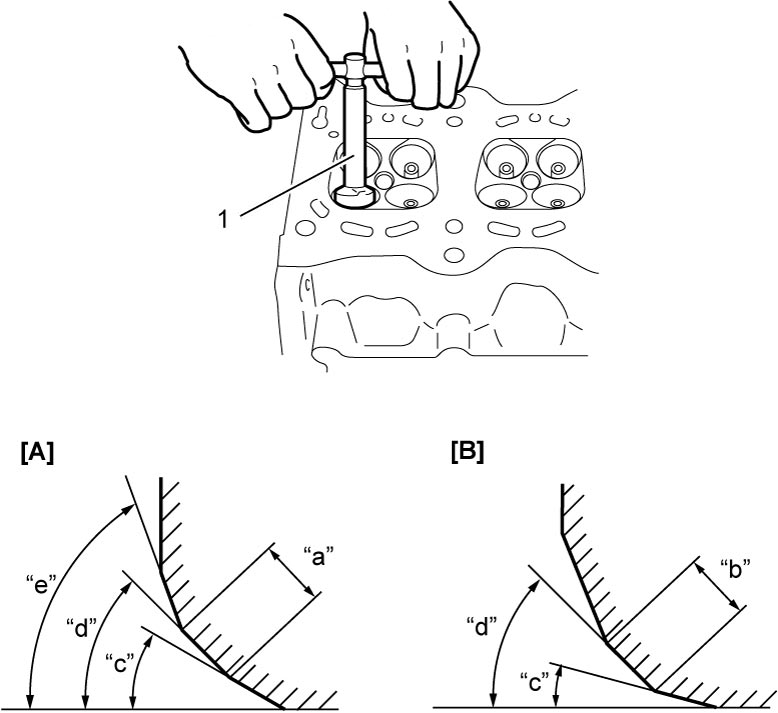

1D
| Valve and Valve Guide Inspection |
Valve Guide
Valve stem-to-valve guide clearance
Using a micrometer and bore gauge, take diameter readings on valve stems and valve guides to check valve stem-to-valve guide clearance.
Take reading at more than one place along the length of each valve stem and valve guide.
If clearance exceeds limit, replace valve and valve guide.
Valve stem and valve guide specification
| Item | Standard | Limit | |
|---|---|---|---|
| Valve stem outside diameter [A] | In | 5.465 – 5.480 mm (0.2152 – 0.2157 in.) | — |
| Ex | 5.440 – 5.455 mm (0.2142 – 0.2147 in.) | — | |
| Valve guide inside diameter [B] | In & Ex | 5.500 – 5.512 mm (0.2166 – 0.2170 in.) | — |
| Valve stem-to-valve guide clearance | In | 0.020 – 0.047 mm (0.0008 – 0.0018 in.) | 0.070 mm (0.0028 in.) |
| Ex | 0.045 – 0.072 mm (0.0018 – 0.0028 in.) | 0.090 mm (0.0035 in.) | |

 "Expand image")
Valve stem end deflection
If bore gauge is not available, check end deflection of valve stem with a dial gauge instead.
Move valve stem end in directions (1) and (2) to measure end deflection.
If deflection exceeds its limit, replace valve stem and valve guide.
Valve stem end deflection limit
In: 0.14 mm (0.0055 in.)
Ex: 0.18 mm (0.0071 in.)

 "Expand image")
Valve
Visual inspection
•Remove all carbon deposits from valve (1).
•Check each valve for wear, burn or distortion at its face and valve stem and, if necessary, replace it.
•Measure valve protrusion “a”.
If measured length is out of standard value, replace valve.

•Check each valve for wear, burn or distortion at its face and valve stem and, if necessary, replace it.
•Measure valve protrusion “a”.
If measured length is out of standard value, replace valve.
Valve protrusion “a” standard
IN: 36.78 – 37.38 mm (1.449 – 1.471 in.)
EX: 36.68 – 37.28 mm (1.445 – 1.467 in.)

 "Expand image")
| 2. | Valve guide | 3. | Valve seat |
Valve head radial runout
Check each valve for radial runout with a dial gauge and “V” block. To check runout, rotate valve slowly. If runout exceeds its limit, replace valve.
Valve head radial runout
| Standard | Limit | |
|---|---|---|
| Intake valve | 0.045 mm (0.0018 in.) |
0.08 mm (0.0031 in.) |
| Exhaust valve | 0.030 mm (0.0012 in.) |
0.08 mm (0.0031 in.) |

 "Expand image")
Seating contact width
Create contact pattern on each valve in the usual manner, i.e., by giving uniform coat of marking compound to valve seat and by rotating and tapping seat with valve head. Valve lapper (tool used in valve lapping) must be used.
Pattern produced on seating face of valve must be a continuous ring without any break, and the width of pattern must be within specified range.
Standard seating width “a” revealed by contact pattern on valve face
Intake and Exhaust: 1.0 – 1.4 mm (0.0394 – 0.0551 in.)

 "Expand image")
Valve seat repair
If a valve seat does not contact its valve uniformly or shows width of seating contact out of specified range, repair it by cutting (if necessary) and regrinding and then finish it by lapping.
1)Intake valve seat:
Use valve seat cutters (1) to make three cuts as shown in figure. Three cutters must be used: the 1st for making 22° angle, the 2nd for making 60° angle, and 3rd for making 45° angle. The 3rd cut (45°) must be made to produce desired seat width.
Use valve seat cutters (1) to make three cuts as shown in figure. Three cutters must be used: the 1st for making 22° angle, the 2nd for making 60° angle, and 3rd for making 45° angle. The 3rd cut (45°) must be made to produce desired seat width.
Seat width for intake valve seat
“a”: 1.0 – 1.4 mm (0.0394 – 0.0551 in.)
2)Exhaust valve seat:
Use valve seat cutters (1) to make two cuts as shown in figure. Two cutters must be used: the 1st for making 22° angle, and the 2nd for making 45° angle. The second cut must be made to produce desired seat width.
Use valve seat cutters (1) to make two cuts as shown in figure. Two cutters must be used: the 1st for making 22° angle, and the 2nd for making 45° angle. The second cut must be made to produce desired seat width.
Seat width for exhaust valve seat
“b”: 1.0 – 1.4 mm (0.0394 – 0.0551 in.)
3)Valve lapping:
Lap valve on seat in two steps, first with coarse size lapping compound applied to face and the second with fine-size compound, each time using valve lapper according to usual lapping method.
Lap valve on seat in two steps, first with coarse size lapping compound applied to face and the second with fine-size compound, each time using valve lapper according to usual lapping method.

 "Expand image")
| [A]: | Intake | “d”: | 45° |
| [B]: | Exhaust | “e”: | 60° |
| “c”: | 22° |